Le manuel de KAWA BETA
KAWA transforme le M-VAVE FM-1 en tracker de poche, fait avant tout pour la chiptune et l'IDM. Tu as six pistes, chacune avec son moteur : ondes 4 bits, carré et bruit comme sur les vieilles consoles, FM, kit de batterie ou break découpé en tranches. S'y ajoutent des roulés et des ratchets (l'effet de case ROL), des tables, le groove, la saturation de chaque piste, 32 effets à jouer en direct (BEGAIE, SCRATCH, RELANCE, ROULEAU…) et des outils qui écrivent des beats à ta place (EUCLIDE, HASARD…). Il sait faire d'autres styles, mais c'est pour ça qu'il est construit.
Ce manuel va droit au but : installer KAWA, puis cinq tutoriels pour faire un vrai morceau, puis le détail du son et des effets. Version 0.5 bêta.
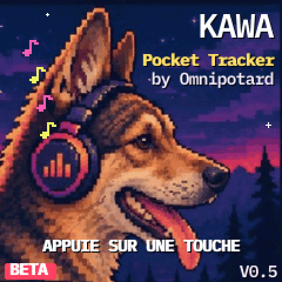
Version bêta : à lire avant tout
KAWA 0.5 compile pour le FM-1 et passe toutes les vérifications de sa plateforme : taille, mémoire, accès au matériel. Il tourne dans le simulateur et dans l'émulateur web. En revanche, il n'a pas encore été essayé sur un vrai FM-1.
Installer un firmware non officiel se fait à tes risques. Le chemin d'installation est celui de Dinghy et Felucca, déjà utilisés sur de vrais FM-1, et il prévoit plusieurs filets de sécurité (plus bas). Branche le FM-1 sur une alimentation stable et ne le débranche jamais pendant une installation.
Les projets ne sont pas encore transférables vers l'ordinateur. Si un comportement te semble bizarre, dis-le : c'est le but d'une bêta.
Nouveautés de la 0.5
- Un morceau vide au démarrage. Quand rien n'a été sauvé, KAWA démarre sur un morceau vide, à 100 BPM (avant : la démo, à 160). La démo reste là : SAVE, PROJETS, DEMO. La sauvegarde automatique te rend toujours ton dernier travail après une extinction.
- L'écran de démarrage attend : « APPUIE SUR UNE TOUCHE » clignote, et ce premier appui ne fait que le fermer. Sur un morceau vide, la page PISTES montre un encadré « KAWA - MORCEAU VIDE » avec les trois gestes pour commencer ; il part à la première note.
- Les encodeurs ne se marchent plus dessus. SELECT tourne les pages d'un bouton (EDIT, LFO, ENV, FX, GLO) ; ALGORITHM choisit la piste, mais aussi la case de la chaîne, le pas du groove et le mode du métronome ; PRESETS choisit le son d'usine, l'opérateur, la ligne de table, la tranche ou le motif. Tout le détail est dans Le tour du FM-1.
- Le moteur d'une piste se change avec ARP tenu + PRESETS. Un son que tu as retouché est protégé : PRESETS montre seulement le son d'usine suivant, en doré, et OCT+ le charge (voir le tuto 1).
- ANNULER marche aussi sur le son : chaque potard tourné sur une page de son, chaque envoi, chaque son d'usine chargé. Motifs et sons partagent un historique de 10 étapes (avant : 6).
- Le bouton LFO ouvre LFO, puis MODULATION (elles ne sont plus sur EDIT). La MAGIE passe sur SCL : un appui pour la GAMME, deux pour la MAGIE.
- FX ouvre ENVOIS : SATURE (nouveau), ECHO et REVERB de chaque piste. Un deuxième appui ouvre les effets LIVE, un troisième te ramène d'où tu viens. Tenu depuis une autre page, FX montre LIVE tant que tu le tiens, comme avant.
- SAVE tenu : les outils. OPTIONS, ANNULER, REFAIRE, EFFACER, COPIER, COLLER, HASARD. Tenir SAVE n'annule plus rien tout seul ; SAVE tenu + OCT− / OCT+ annule / refait toujours aussitôt.
- Une barre jaune se remplit en bas de l'écran quand tu tiens HOME (AIDE), FX (LIVE) ou SAVE (OUTILS), avec ce nom au-dessus : la page s'ouvre quand elle est pleine. Un appui court n'affiche rien.
- SAVE clignote tant que le morceau a des modifications qui ne sont pas sauvées dans un de tes emplacements.
- HOME + PLAY : panique. Le morceau s'arrête, toutes les voix et les effets live se coupent (« PANIC »).
- 16, 32 ou 64 pas sur la GRILLE, avec OCT− / OCT+. Les 64 pas sont un motif lié au suivant.
- Un métronome et son volume, dans OPTIONS.
- Le bouton ARP est expliqué noir sur blanc : ce n'est pas un arpégiateur, c'est la touche « efface / majuscule » (voir À quoi sert ARP ?).
- Tes projets : ceux de la 0.4 et de la 0.2 s'ouvrent dans la 0.5. Ceux de la 0.5 s'ouvrent encore dans la 0.4 et la 0.3, où l'envoi SATURE et la liaison des 64 pas sont simplement ignorés.
Composer avec un tracker
Le tracker est né avec la musique des vieilles consoles et des ordinateurs 8 bits, et l'IDM en a fait un instrument : c'est pour ces deux musiques que KAWA est construit, des notes au pas près, des roulés, des breaks hachés. Tout le reste s'y écrit aussi (techno, hip hop, ambient…). Ce qui change, c'est la façon de composer, très différente d'un logiciel de musique habituel (un DAW).
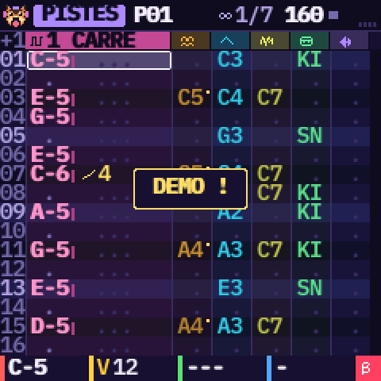
Le temps descend : chaque ligne est un pas, une double croche (quatre lignes par temps). Chaque colonne est une piste. Chaque case dit quoi jouer à ce pas précis : une note, son volume et un effet.
On lit le morceau comme une partition qui défile, et on l'écrit au clavier, note par note, à l'endroit exact. Pas de souris, pas de zoom : la grille est toujours la même.
| Dans un DAW | Dans KAWA | |
|---|---|---|
| Le temps | Défile de gauche à droite, sur une timeline | Descend ligne par ligne ; une ligne est un pas |
| Écrire une note | La dessiner dans un piano roll | La jouer au clavier sur la ligne voulue (REC) |
| Nuances et effets | Des courbes d'automation | Écrits dans la case, au pas près : arpège, glissé, roulement, volume… |
| Le morceau | Des clips posés sur une timeline | Des motifs courts, enchaînés dans la CHAINE, chacun joué N fois |
| Les sons | Des pistes audio et des plugins | Six pistes, chacune avec son moteur (FM, kit, sample…), tout dans la machine |
Ce qu'on y gagne : tout le morceau se lit d'un coup d'œil, au pas près ; les mains restent sur les touches et les potards ; on écrit vite un motif, on le varie (CLONER, MAGIE), on l'enchaîne. Les tutoriels plus bas montrent tout le chemin, d'un morceau vide à un morceau complet.
01Installer KAWA
Il te faut un câble USB de données, un ordinateur et Python 3 (python.org). Le firmware est le fichier kawa-0.5.fwsc du dossier install/.
- Ferme les autres logiciels MIDI, puis branche le FM-1 allumé.
- Le plus simple : double-clic sur
INSTALL-Windows.batouINSTALL-Mac.command(Linux :./INSTALL-Linux.sh). La première fois, il récupère ce qu'il lui faut (rtmidi2) ; il vérifie le paquet, demande confirmation, envoie le loader, puis l'application. - À la main :
pip3 install rtmidi2, puispython3 install/fm1_install.py --infopour voir ce que tourne le FM-1, puispython3 install/fm1_install.py install/kawa-0.5.fwsc. - Le FM-1 redémarre sur KAWA : le chien apparaît et attend (« APPUIE SUR UNE TOUCHE ») ; touche n'importe quoi, et tu arrives sur ton dernier travail (la sauvegarde automatique) ou, s'il n'y en a pas, un morceau vide. La démo est dans SAVE, PROJETS, DEMO. Pour vérifier,
python3 install/fm1_install.py --inforépond maintenantFM-1_955.
Ce que l'installation n'écrit jamais
- Le début de la mémoire, avec le bootloader de la puce et sa configuration.
- La zone des projets et des samples, de 0x97000 à 0xE0000, ni les réglages en 0xFC000.
- Une mise à jour garde tes projets et tes samples. Les projets de la 0.2 s'ouvrent dans la 0.5 tels qu'ils étaient (ils sont convertis au chargement, puis sauvés dans le nouveau format). Les projets faits avec la 0.1 ne sont pas lus (leur format a changé) ; un morceau vide démarre à leur place, et ils sont remplacés dès que tu sauves.
Les filets de sécurité
- Rien n'est validé avant la fin. Si l'envoi échoue, la zone de transit est effacée et l'ancien firmware continue.
- Le paquet est vérifié en entier avant d'effacer quoi que ce soit. Un paquet abîmé ou incomplet est refusé. Un secteur qui arrive différemment pendant l'écriture est relu, jamais écrit.
- Coupure de courant pendant l'installation : le loader reprend au rallumage. Relance l'installeur.
- Le secours USB : tiens OCT− en allumant. KAWA démarre alors sans son, avec seulement la mise à jour. Si KAWA plante deux fois de suite dans les 30 secondes qui suivent l'allumage, le FM-1 y va tout seul.
- En dernier recours : la ROM de démarrage de la puce répond encore en USB (
WL80UBOOT). FM-1 Transporter peut alors réécrire le firmware officiel, mais il faut du matériel en plus, et la rétro-ingénierie du FM-1 juge ce chemin pas encore prouvé sur les FM-1 du commerce.
02Revenir au firmware officiel
Si KAWA ne te plaît pas, le firmware officiel se réinstalle avec l'outil de M-VAVE. C'est l'étape la plus délicate, car elle réécrit aussi le bootloader : prends ton temps.
- Les projets KAWA seront perdus. Le firmware officiel ne sait pas les lire.
- Branche le FM-1 sur une alimentation stable, avec un câble USB de données, et ferme les autres logiciels MIDI.
- Si KAWA se comporte mal, tiens OCT− en allumant : l'écran affiche « KAWA USB RESCUE ».
- Lance M-UPGRADE de M-VAVE avec le firmware officiel V15 (identité
FM-1_015, SHA-256db1642b2…7edb8a). - Avant que l'outil officiel n'écrive quoi que ce soit, KAWA vérifie deux choses : que c'est bien le programme de mise à jour de M-VAVE, et que la zone de démarrage du paquet officiel est exactement celle déjà présente dans ton FM-1 (l'outil officiel la réécrit, il ne peut donc y remettre que les mêmes octets). Si l'une des deux ne colle pas, rien n'est écrit et KAWA continue de tourner.
- Ne débranche rien pendant le transfert. S'il s'arrête au milieu, rebranche et relance-le.
- Vérifie le résultat :
python3 install/fm1_install.py --infodoit répondreFM-1_015.
03Le tour du FM-1
Un potard, une couleur
KNOB 1 est rouge, KNOB 2 jaune, KNOB 3 vert et KNOB 4 bleu, sur toutes les pages. La ligne du bas de l'écran a quatre cases aux mêmes couleurs et dit ce que fait chaque potard. Sur les pages de son, les cartes ont aussi ces couleurs. La petite case rouge marquée β rappelle que c'est une bêta.
Les boutons et leurs pages
| Bouton | Page | Appuie encore |
|---|---|---|
| HOME | PISTES : le tracker | Tenu : l'aide de la page où tu es (une barre jaune AIDE se remplit d'abord). HOME + PLAY : panique |
| SEQ | GRILLE : les pas de la piste sur les 16 touches blanches, par pages de 16 (OCT− / OCT+ : 16, 32 ou 64 pas) | Retour aux pistes |
| EDIT | SON : le moteur et le son de la piste | Page suivante, en faisant le tour : SON 2, puis OPERATEUR et ENV OPERAT (FM) ou SAMPLE (sample), EFFET, TABLE |
| LFO | LFO : le LFO de la piste | MODULATION, puis de nouveau LFO |
| ENV | ENVELOPPE : l'ADSR de la piste | MIX : volumes, panos, envois, effet master |
| SCL | GAMME : tonique, gamme, verrou | MAGIE : 16 outils sur les touches blanches ; un troisième appui : retour aux pistes |
| GLO | CHAINE : tempo, swing, la liste des motifs | GROOVE : les ticks de chaque ligne ; puis OPTIONS : thème, langue, horloge MIDI, police, métronome ; puis retour à la CHAINE |
| SAVE | PROJETS : le menu des morceaux (il clignote tant que des modifications ne sont pas sauvées) | Tenu : les outils (OPTIONS, ANNULER, REFAIRE, EFFACER, COPIER, COLLER, HASARD) |
| FX | ENVOIS : SATURE, ECHO et REVERB de chaque piste | LIVE : les 32 effets à jouer ; un troisième appui : retour d'où tu viens. Tenu depuis une autre page : LIVE tant que tu tiens |
| ARP | Efface ce qui est sous le curseur | Tenu : touche « majuscule » d'un autre geste (voir plus bas) |
| PLAY REC | Lecture, enregistrement | REC tenu + SELECT : le saut de lignes |
OCT− et OCT+ changent l'octave du clavier. Selon la page, ils font autre chose : sur la GRILLE, le nombre de pas ; sur la CHAINE, ils ôtent ou ajoutent une case ; sur PROJETS, ils font retour / OK ; sur LIVE, ils changent de banque ; sur SON, quand un son d'usine est montré en doré, OCT+ le charge et OCT− garde ton son ; et avec SAVE tenu, ils annulent / refont aussitôt.
Les encodeurs
| Encodeur | Ce qu'il fait |
|---|---|
| SELECT | Sur EDIT, LFO, ENV / MIX, FX et GLO : il change de page dans le groupe du bouton (il s'arrête aux bouts, alors que le bouton fait le tour). Ailleurs, c'est le curseur : la ligne (PISTES), la page de 16 pas (GRILLE : 1-16, 17-32… jusqu'à 64), le menu (PROJETS). REC tenu + SELECT : de combien de lignes saute une note. ARP tenu + SELECT : insère ou ôte une ligne. |
| ALGORITHM | La piste (sur MIX, jusqu'au master). Sur la CHAINE : la case de la chaîne. Sur GROOVE : le pas. Sur OPTIONS : le mode du métronome. Sur PISTES, ARP tenu + ALGORITHM : insère ou ôte une ligne dans tout le motif. |
| PRESETS | Sur la première page SON : le son d'usine (la liste est classée par moteur, elle passe donc d'un moteur à l'autre) ; ARP tenu + PRESETS : le moteur suivant / précédent. Sur un son retouché, il montre seulement le son d'usine, en doré, et OCT+ le charge. Sur les autres pages d'EDIT, le curseur de la page : l'opérateur (OPERATEUR, ENV OPERAT), la ligne de la TABLE, la tranche (SAMPLE) ; SON 2, EFFET, LFO et MODULATION : rien. Sur la CHAINE : le motif de la case. Sur OPTIONS : le volume du métronome. Sur PISTES, GRILLE, MAGIE, GAMME, ENVOIS et LIVE : le motif. Sur ENV, MIX, GROOVE et PROJETS : rien. |
| MASTER | Le volume général. |
| KNOB 1 à 4 | Les quatre potards de couleur : leur rôle change avec la page, la ligne du bas le dit. |
À quoi sert ARP ?
Malgré son nom, ARP n'est pas un arpégiateur. C'est la touche « efface / majuscule » de KAWA : un appui efface ce qui est sous le curseur, et tenu avec un autre geste, elle change ce que fait ce geste. (L'effet de case ARP, l'arpège d'un accord, est une autre chose : voir Les effets de case.)
| Page | Un appui sur ARP | ARP tenu, avec… |
|---|---|---|
| PISTES | Efface la case (et le curseur avance du saut de lignes si REC est allumé) | SELECT : insère ou ôte une ligne dans la piste ; ALGORITHM : dans tout le motif ; K3 K4 : le second effet de la case |
| GRILLE | Tiens un pas (une touche blanche) et appuie sur ARP : le pas est effacé | — |
| SON (première page) | — | PRESETS : le moteur suivant / précédent |
| SON (TABLE) | Efface le pas de table sous le curseur | — |
| SON (SAMPLE) | Répartit à nouveau les 16 tranches à égalité | — |
| CHAINE | Passe de BOUCLE à CHAINE | — |
| LIVE | Efface la bande LIVE du motif | — |
| MIX | — | Une touche noire : solo de la piste |
04Premiers pas
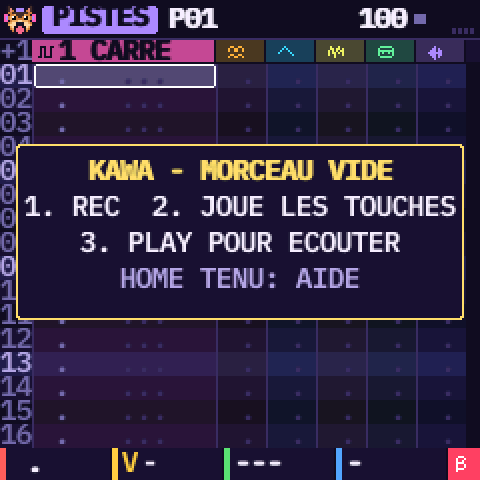
Un morceau videLe chien attend : appuie sur n'importe quel bouton, touche ou potard (ce premier appui ne fait que fermer l'écran de démarrage). Au premier démarrage, KAWA te donne un morceau vide, à 100 BPM, et un encadré te dit quoi faire : « KAWA - MORCEAU VIDE », « 1. REC 2. JOUE LES TOUCHES », « 3. PLAY POUR ECOUTER », « HOME TENU: AIDE ». Il disparaît à la première note (et tant que REC ou PLAY est allumé).
- Les pistes
Pour voir un morceau complet, charge la démo « KAWA QUEST » : appuie sur SAVE, descends sur DEMO avec SELECT et appuie sur OCT+. C'est elle qu'on voit ici. Chaque colonne est une piste, avec sa couleur. La piste du curseur s'affiche en large : la note, son volume en petite barre, et l'effet de la case. Les numéros à gauche sont les lignes ; chaque ligne dure une double croche. Ensuite, KAWA te rend ton dernier travail à chaque allumage (la sauvegarde automatique).
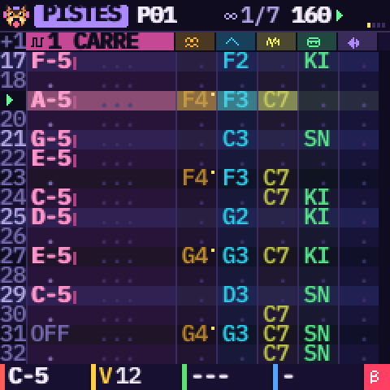
JouerLa démo chargée, appuie sur PLAY. La ligne qui joue s'éclaire et les cases clignotent quand une note part. En haut à droite, tu vois la position dans la chaîne, le tempo et le temps en cours. PLAY à nouveau arrête.
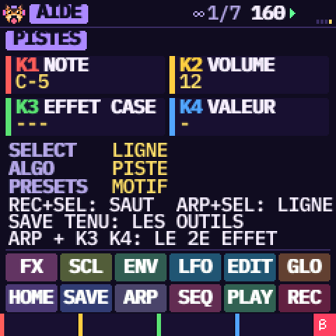
L'aide, partoutTiens HOME sur n'importe quelle page : une petite barre jaune marquée AIDE se remplit en bas de l'écran, et l'aide s'ouvre quand elle est pleine. KAWA montre alors ce que font les quatre potards de cette page, les trois encodeurs et les combinaisons utiles. Lâche HOME pour revenir où tu étais. (Un appui court sur HOME ramène aux pistes ; HOME appuyé avec un autre bouton n'y ramène pas.)
Si tout s'emballe : HOME + PLAY, la panique. Le morceau s'arrête, toutes les voix et les effets live se coupent, et l'écran dit « PANIC ».
05Tuto 1 · Un nouveau morceau
Au premier démarrage, KAWA est déjà sur un morceau vide : tu peux sauter les trois premières étapes. Elles servent quand tu veux repartir de zéro plus tard, après la démo ou un autre morceau.
- Ouvre le menu des projets
Appuie une fois sur SAVE. En haut, le nom du morceau, son emplacement entre crochets, et une étoile s'il a changé depuis la dernière sauvegarde. SELECT se déplace dans le menu, OCT+ valide, OCT− revient en arrière.
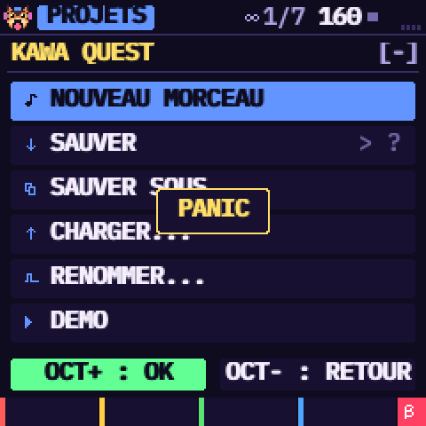
Nouveau morceauMonte sur NOUVEAU MORCEAU et appuie sur OCT+. Si le morceau en cours n'est pas sauvé, KAWA te le demande d'abord.
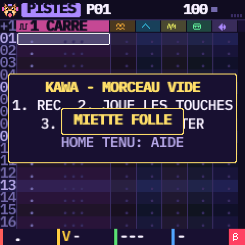
Un morceau tout neufLe morceau reçoit un nom au hasard, que tu changeras en le sauvant, et démarre à 100 BPM. Ses six pistes ont déjà un son chacune : un lead carré, la FM, une basse onde, des charleys en bruit, un kit et un break.
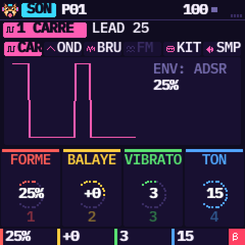
Choisis le son d'une pisteALGORITHM choisit la piste, puis EDIT ouvre sa page SON. La bande du haut montre les six moteurs. PRESETS parcourt les sons d'usine, et les quatre potards règlent le son. SELECT, lui, passe aux pages suivantes (SON 2, EFFET…).
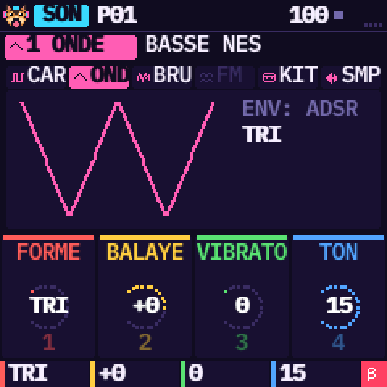
Change de moteurTiens ARP et tourne PRESETS : la piste passe au moteur suivant ou précédent (CARRE, ONDE, BRUIT, FM, KIT ou SAMPLE), avec son premier son d'usine (sur un son retouché, la même protection : voir plus bas). Ici, la piste 1 est passée de CARRE à ONDE. Tu peux aussi tourner PRESETS seul : la liste d'usine est classée par moteur, elle franchit donc les moteurs toute seule. La FM est grisée si une autre piste l'a déjà : une seule piste FM à la fois, pour que le FM-1 ne s'essouffle jamais.
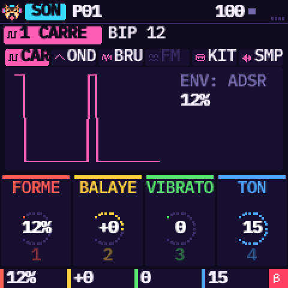
Un son d'usineTourne PRESETS pour essayer les sons d'usine : sur un son que tu n'as pas touché, il change tout de suite. Joue les touches pour l'écouter. Ici, BIP 12.
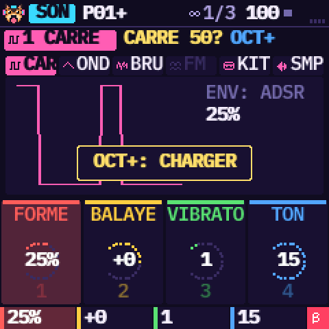
Un son retouché est protégéDès que tu tournes un potard, une étoile apparaît après le nom (« BIP 12* ») : ce son est à toi, et PRESETS ne le remplace plus. Il montre seulement le son d'usine suivant, en doré, avec un « ? » et « OCT+ » à côté, et l'écran dit « OCT+: CHARGER ». Continue de tourner pour parcourir la liste : tu entends toujours ton son.
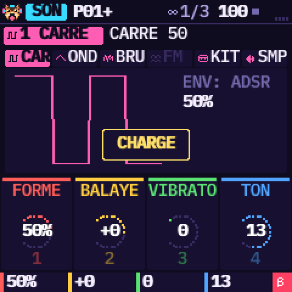
OCT+ le chargeOCT+ charge le son montré : « CHARGE ». OCT− garde ton son : « GARDE ». Tourner un potard, changer de piste ou de page, ou rester 8 secondes sans rien toucher gardent aussi ton son. ARP tenu + PRESETS (le moteur) suit la même règle.
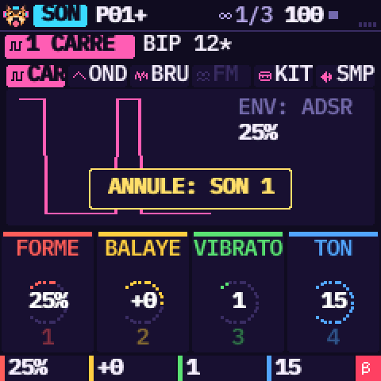
Chargé par erreur ? AnnuleTiens SAVE et appuie sur OCT− : ton son revient, étoile comprise, et l'écran dit « ANNULE: SON 1 » (KAWA passe sur la piste concernée). OCT+ refait (« REFAIT: SON 1 »). Tous les changements de son s'annulent ainsi, potards compris (voir plus bas).
06Tuto 2 · Écrire un motif
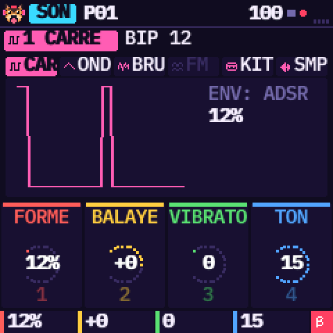
Enregistre des notesReviens sur les pistes avec HOME, appuie sur REC (le curseur devient rouge), puis joue des notes. Chaque note s'écrit à la ligne du curseur, et le curseur descend. Quand la gamme est verrouillée (page GAMME), les touches restent dans la gamme.
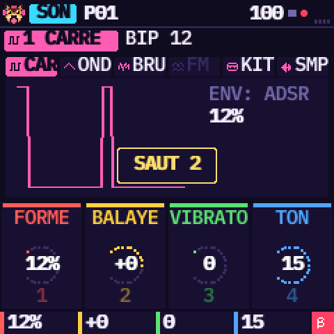
Le saut de lignesTiens REC et tourne SELECT : tu règles de combien de lignes le curseur saute après chaque note (0 à 16). Avec 2, tu écris des croches ; avec 4, des noires. La valeur s'affiche en haut à gauche du tracker.
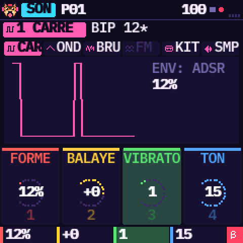
Retouche une casePlace le curseur avec SELECT. K1 change la note, K2 son volume, K3 l'effet de la case et K4 la valeur de l'effet (ici un arpège mineur). ARP efface la case. Tiens ARP et tourne SELECT pour insérer ou ôter une ligne.
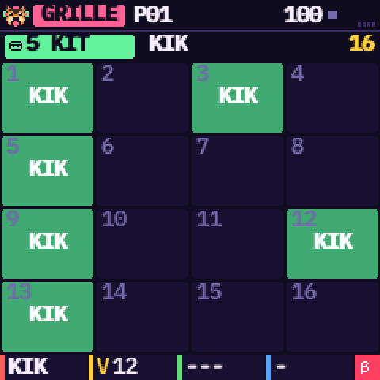
La batterie à la grilleChoisis la piste du kit avec ALGORITHM et appuie sur SEQ. Les 16 touches blanches sont les 16 pas, comme sur un Pocket Operator : une touche pose le son, une autre fois l'enlève. K1 choisit la percussion qui sera posée. Tiens un pas pour le retoucher avec les potards. Les touches noires changent de piste.
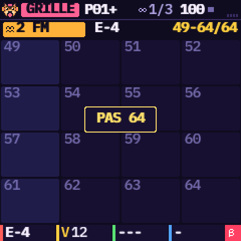
16, 32 ou 64 pasSur la grille, OCT− et OCT+ règlent la taille du motif : 16 pas (le classique), 32 ou 64, et un message le dit (« PAS 64 »). La grille montre toujours 16 pas à la fois : SELECT passe d'une page à l'autre (1-16, 17-32, 33-48, 49-64), et l'en-tête jaune dit où tu es (« 49-64/64 »).
64 pas, c'est ce motif (32 pas) lié au motif suivant (32 pas) : les deux jouent d'une seule traite, en boucle comme dans la chaîne, et la barre du haut montre « P01+ » sur la première moitié et « +P02 » sur la seconde. Les pages 33 à 64 de la grille éditent donc le motif suivant. OCT− repasse à 32 et sépare les deux : la seconde moitié reste un motif à part, rien n'est perdu. KAWA refuse la liaison sur le dernier motif, P32 (« DERNIER MOTIF »), ou si le motif suivant est déjà lié, ou si ce motif est lui-même la seconde moitié d'un autre (« MOTIF DEJA LIE »). Un seul ANNULER défait une liaison. En REC pendant la lecture, les notes s'écrivent dans la moitié qui joue ; si tu passes sur une paire de 64 pas pendant que la boucle joue, elle part de sa première moitié. CLONER refuse une moitié de paire (« MOTIF LIE »). La longueur du motif sur la CHAINE (K4) règle toujours n'importe quelle longueur de 1 à 32.
07Tuto 3 · D'autres motifs
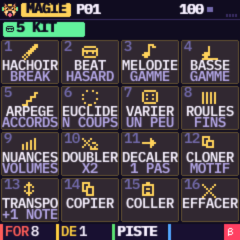
La magieAppuie deux fois sur SCL (une fois, c'est la GAMME) : tu es sur les 16 outils magiques, un par touche blanche. K1 règle leur force, K2 le dé, K3 la portée : la piste seule ou le motif entier.
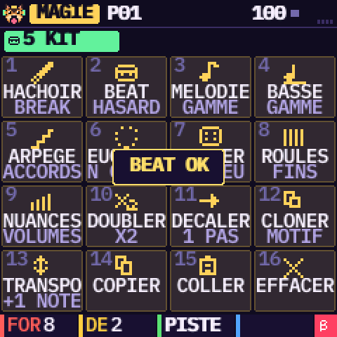
Un beat en une toucheTouche 2 : BEAT écrit un rythme sur la piste. Rejoue-le pour un autre. Chaque outil s'annule : tiens SAVE et appuie sur OCT−.
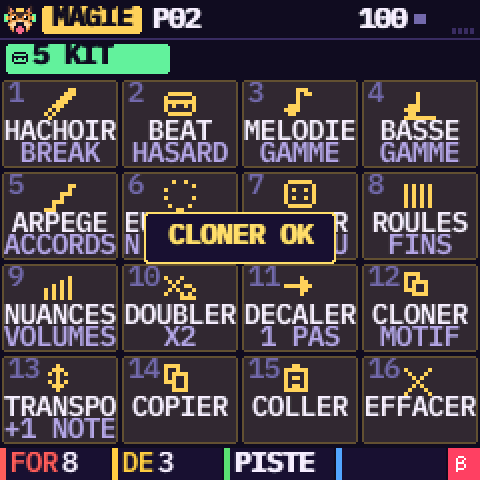
Clone le motifTouche 12 : CLONER copie le motif dans le prochain motif vide, l'ajoute à la chaîne juste après, et t'y emmène. C'est le moyen le plus rapide de faire une variation.
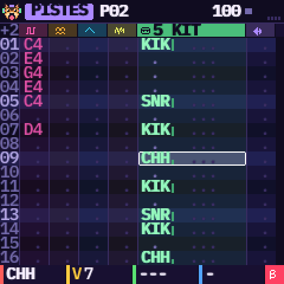
Change de motifTu es maintenant sur P02, que tu peux modifier sans toucher P01. PRESETS passe d'un motif à l'autre (32 motifs de 1 à 32 lignes). Pendant la lecture, si tu changes de motif, l'écran reste sur celui que tu édites et indique « >P01 » pour celui qui joue.
08Tuto 4 · Enchaîner les motifs pour faire un morceau
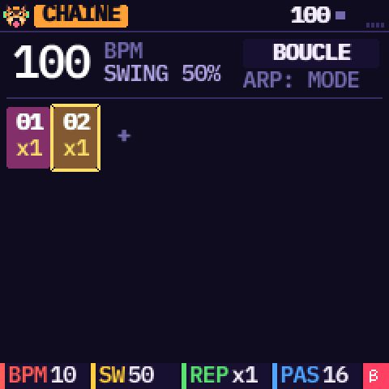
La chaîneGLO ouvre la CHAINE : la liste des motifs dans l'ordre du morceau. Chaque case montre un motif et le nombre de fois qu'il joue. ALGORITHM choisit une case, PRESETS change son motif.
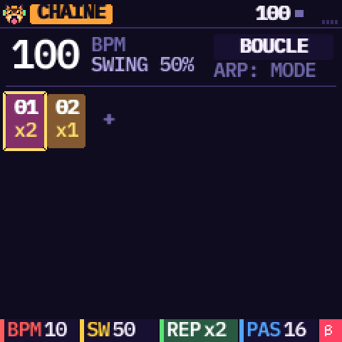
Répète un motifK3 règle combien de fois la case joue son motif : de ×1 à ×16. Un couplet de quatre mesures fait de deux motifs ? Mets chacun à ×2.
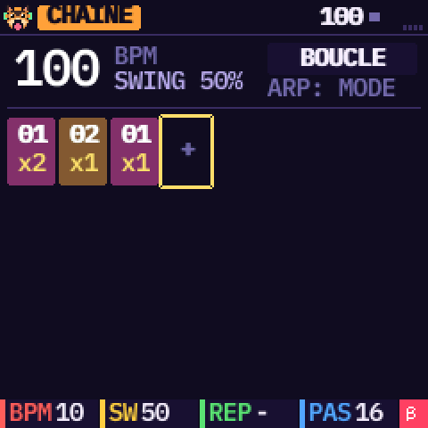
Ajoute des casesAvec ALGORITHM, va sur le « + » au bout et appuie sur une touche blanche : la touche 1 ajoute le motif 1, la touche 2 le motif 2… OCT+ copie la case du curseur juste après elle, OCT− l'enlève.
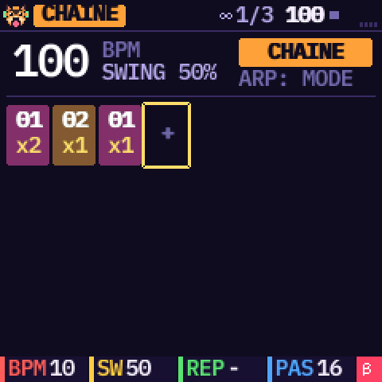
Boucle ou chaîneARP passe de BOUCLE (le motif à l'écran tourne en boucle, pratique pour composer) à CHAINE (le morceau entier, case après case). K1 règle le tempo, K2 le swing et K4 la longueur du motif.
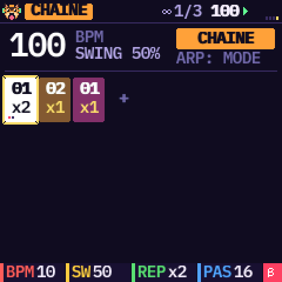
Écoute le morceauSur la case de départ, appuie sur PLAY. La case qui joue s'éclaire, et des points comptent ses répétitions. À la fin de la chaîne, le morceau repart au début.
09Tuto 5 · Sauvegarder
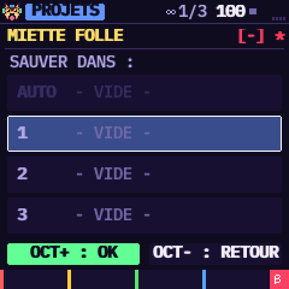
Sauver sousSAVE, puis SAUVER ou SAUVER SOUS… et OCT+. Choisis un des trois emplacements avec SELECT (ou une touche blanche 2 à 4). Si l'emplacement est déjà pris, KAWA demande avant d'écraser.
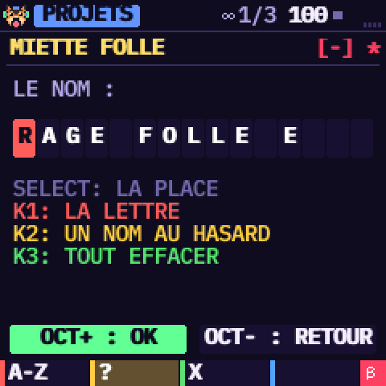
Donne-lui un nomSELECT choisit la lettre à changer, K1 la change, K2 tire un nom au hasard, K3 efface tout. OCT+ sauve.
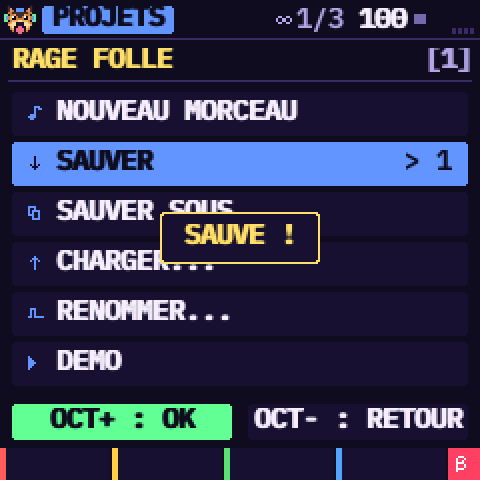
Ensuite, en deux appuisLe morceau garde son emplacement : SAVE puis OCT+ le resauve au même endroit. CHARGER… ouvre un morceau, RENOMMER… change son nom. En plus, KAWA sauve tout seul dans l'emplacement AUTO quand tu ne joues pas.
Les outils : SAVE tenu
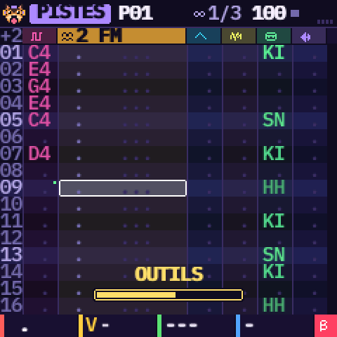
Tiens SAVEUn appui court sur SAVE ouvre PROJETS. Si tu tiens, une petite barre jaune marquée OUTILS se remplit en bas de l'écran ; quand elle est pleine (environ une demi-seconde), le panneau des outils s'ouvre. La même barre se remplit quand tu tiens HOME (AIDE) ou FX (LIVE).
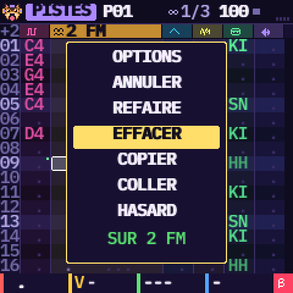
Choisis un outilIl y en a sept : OPTIONS, ANNULER, REFAIRE, EFFACER, COPIER, COLLER et HASARD. SELECT en choisit un (OPTIONS l'est à l'ouverture, ici c'est EFFACER) et il se lance quand tu lâches SAVE. EFFACER, COPIER et COLLER sont les mêmes outils que dans la MAGIE. HASARD écrit au hasard ce qui convient à la piste : une mélodie, une basse, un beat ou un break haché. Tant que le panneau est ouvert, K3 choisit sur quoi ils agissent : la piste du curseur ou le motif entier. La dernière ligne du panneau le dit (« SUR 2 FM », ou « SUR MOTIF »). Tant qu'il est ouvert, les touches et ARP ne font rien.
- Un raccourci vers OPTIONS
Lâche SAVE sur OPTIONS : tu arrives sur la page OPTIONS (thème, langue, police, métronome…) sans passer par GLO. HOME te ramène aux pistes.
Annuler et refaire, tout de suite
Tiens SAVE : OCT− annule la dernière modification, OCT+ la refait, aussitôt, et rien d'autre ne se lance quand tu lâches SAVE. Tenir SAVE sans rien faire d'autre n'annule plus : cela ouvre les outils (ANNULER et REFAIRE y sont aussi).
Les motifs et les sons s'annulent : un potard tourné sur SON, SON 2, OPERATEUR, ENV OPERAT, EFFET, LFO, MODULATION, TABLE, SAMPLE, ENVELOPPE ou MIX, les ENVOIS (SATURE, ECHO, REVERB), et chaque son d'usine chargé. Plusieurs crans d'affilée (sans pause de 1,5 seconde) font une seule étape ; parcourir les sons d'usine d'un son intact aussi (ANNULER te rend le son d'avant). Sur un son, l'écran dit « ANNULE: SON 3 » et passe sur cette piste. Motifs et sons partagent un historique de 10 étapes. Un son FM ne peut pas revenir sur une piste tant qu'une autre joue de la FM : « FM: UNE SEULE PISTE ».
10Le son
Les six moteurs
| Moteur | Le son | Ses réglages |
|---|---|---|
| CARRE | Carré façon NES, sans repliement : 12, 25, 50, 75 % ou PWM | forme, balayage de hauteur, vibrato, ton, écrasement, désaccord (supersaw), vitesse d'arpège, glissé |
| ONDE | Table d'onde 4 bits façon Game Boy : triangle, scie, sinus, doux, GB, orgue, voix, FM | les mêmes que CARRE |
| BRUIT | Bruit LFSR façon NES, LONG ou MÉTAL, accordé par la note | les mêmes que CARRE |
| FM | FM à 6 opérateurs et 32 algorithmes, le moteur de Dexed (une seule piste à la fois) | son FM, algorithme, ratio, retour, brillance, enveloppe des modulateurs, désaccord, vibrato ; et chaque opérateur |
| KIT | 16 percussions synthétisées par kit, 8 kits : ACOUSTIQUE, HIP HOP, TECHNO, DUB REGGAE, LO-FI, GAME BOY, SNES, PERCUS | kit, accord, déclin, saturation, écrasement, ton |
| SAMPLE | Un break en 16 tranches, ou un de tes sons, en tranches ou joué sur les notes | source, mode, accord, calage au tempo, durée, saturation, écrasement, ton |
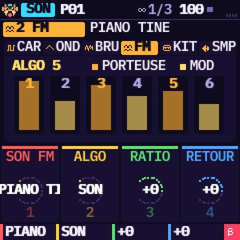
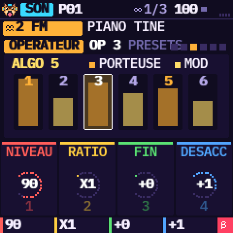
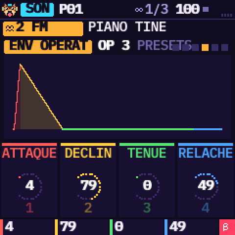
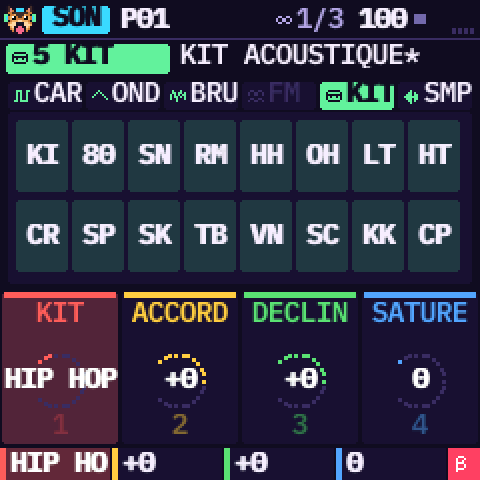
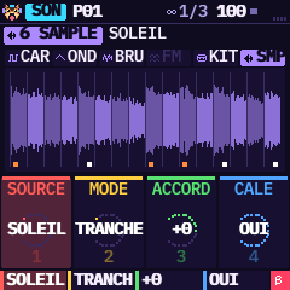
Les pages d'un son
EDIT passe d'une page à l'autre, et fait le tour : SON et SON 2 (les réglages du moteur), pour la FM OPERATEUR et ENV OPERAT, pour un SAMPLE la page SAMPLE (plus bas), puis EFFET et la TABLE de la piste (sa section). SELECT fait la même chose en s'arrêtant aux bouts. Le bouton LFO a ses deux pages à lui : LFO, puis MODULATION (ni l'une ni l'autre n'est sur EDIT). Les petits carrés en haut à droite montrent où tu es.
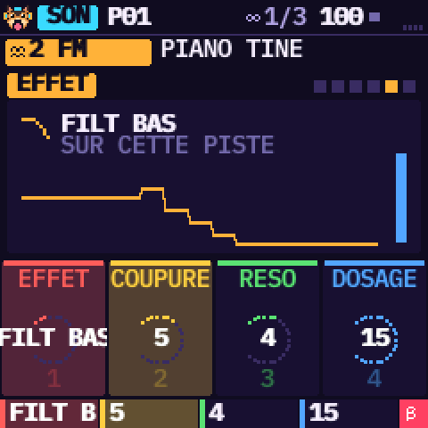
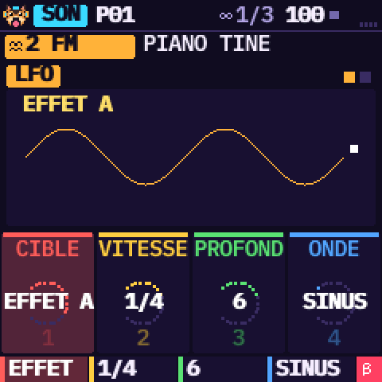
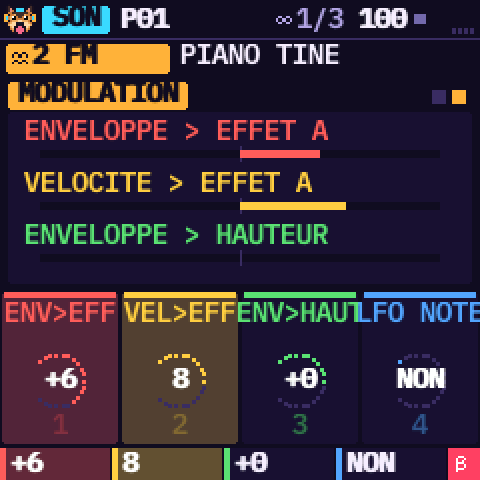
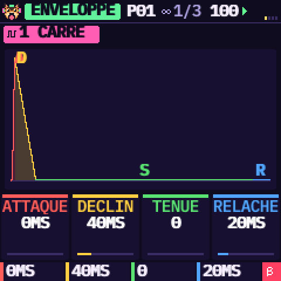
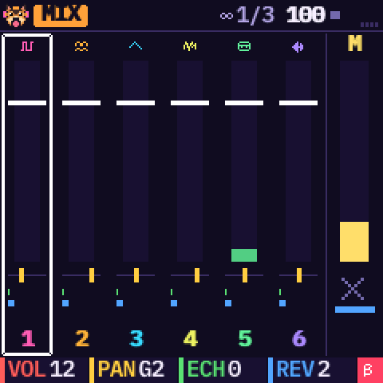
Un effet sur le synthé ou sur le master ? Sur la page EFFET d'un son, l'effet ne touche que cette piste. Pour tout le morceau, va sur MIX (ENV deux fois) et tourne ALGORITHM au-delà de la piste 6 : la colonne M est le master, ses quatre potards règlent son effet.
11Envois et effets live
Le bouton FX a deux pages. Un appui ouvre ENVOIS, un deuxième appui ouvre LIVE, un troisième te ramène à la page d'où tu venais. Après un appui court, SELECT passe aussi de l'une à l'autre.
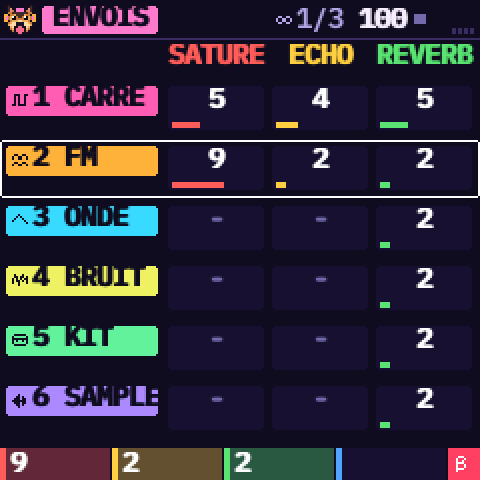
ENVOIS : ce qui part vers les effetsUne ligne par piste, trois colonnes aux couleurs des potards : SATURE, ECHO et REVERB, de 0 à 15 (0 = rien, affiché « - »). ALGORITHM choisit la piste (le cadre blanc), puis K1 règle SATURE, K2 ECHO et K3 REVERB. Les touches jouent la piste, pour que tu entendes ce que tu règles.
SATURE est une saturation douce de la piste, avant son pano et ses envois : plus le son est fort, plus il sature (le niveau est compensé). ECHO et REVERB sont les mêmes envois que sur MIX. Ne confonds pas SATURE avec le réglage SATURE des moteurs KIT et SAMPLE, qui fait partie de leur son : l'envoi marche sur toutes les pistes.
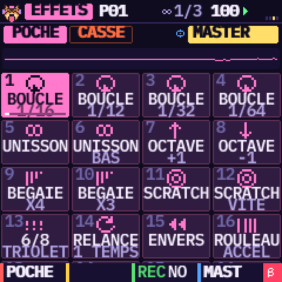
LIVE : joue les effetsSur la page LIVE (un deuxième appui sur FX), appuie sur des touches blanches : boucles, bégaiements, scratch, envers… Tu peux aussi tenir FX depuis n'importe quelle page : une barre jaune marquée LIVE se remplit en bas (un quart de seconde), puis LIVE s'affiche tant que tu tiens. Pas besoin d'attendre la barre : FX et une touche ensemble jouent l'effet tout de suite. Lâche, et le son revient avec la page d'où tu venais. L'onde du haut montre le son, et la tuile d'un effet actif a une barre qui suit son cycle. Sur les autres pages, un bandeau en haut dit quel effet joue. ARP efface la bande LIVE du motif.
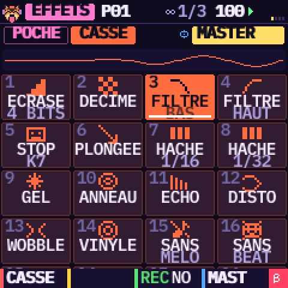
Deux banques, une cibleOCT+ passe à la banque CASSE : filtres, gel, distorsion, vinyle… (OCT− revient à POCHE). K4 choisit la cible : le MASTER, ou une seule piste (par exemple boucler seulement le break). Les touches noires coupent des pistes. Avec REC et la lecture, les effets joués s'enregistrent dans la fine bande LIVE à droite du tracker.
12La magie
La MAGIE est sur SCL : un appui ouvre la GAMME, un deuxième la MAGIE, un troisième te ramène aux pistes. K1 règle la force des outils, K2 le dé (un autre tirage),K3 la portée (la piste ou le motif entier). EFFACER, COPIER et COLLER se retrouvent aussi dans les outils de SAVE tenu (voir plus haut).
| Touche | Outil | Ce qu'il fait |
|---|---|---|
| 1 | HACHOIR | Redécoupe un break, en gardant un kick sur les temps forts et une caisse sur 2 et 4 |
| 2 | BEAT | Un rythme : simple, cassé ou gabber selon la force |
| 3, 4 | MELODIE, BASSE | Une mélodie ou une basse dans la gamme |
| 5 | ARPEGE | Met des arpèges qui suivent la gamme sur les notes |
| 6 | EUCLIDE | N coups répartis au mieux sur le motif |
| 7, 8 | VARIER, ROULES | Change un peu le motif ; ajoute des roulements en fin de temps |
| 9, 10, 11 | NUANCES, DOUBLER, DECALER | Accents ; double la longueur ; décale d'une ligne |
| 12 | CLONER | Copie le motif dans un motif libre et l'ajoute à la chaîne |
| 13 à 16 | TRANSPO, COPIER, COLLER, EFFACER | Monte d'une note ; copier-coller une piste ou un motif ; effacer |
13Les effets de case
Chaque case a deux effets, et les deux jouent. Le premier se choisit avec K3 et se règle avec K4 ; une icône dorée le montre dans le tracker. Tiens ARP et les deux mêmes potards règlent le second : tant qu'ARP est tenu, le tracker montre la seconde colonne en vert, avec l'icône de la première à côté. Une note retardée garde sa hauteur, un vibrato a son propre panoramique, un roulement peut être écrasé.
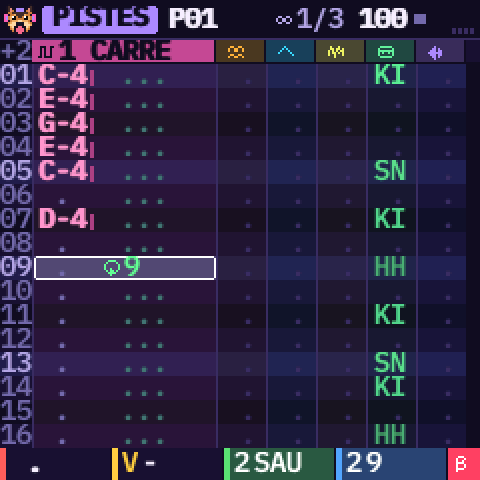
La seconde colonneIci, ARP tenu : le second effet de la case sous le curseur est un SAU (saut) vers la ligne 9, en vert ; l'icône dorée après lui est son premier effet. Lâche ARP et le tracker remontre la première colonne. Une pression brève sur ARP seul efface toujours la case.
| Effet | Ce qu'il fait |
|---|---|
| ARP | Arpège d'un accord (14 accords), à la vitesse chiptune |
| GLI | Glisse depuis la note d'avant |
| VIB | Vibrato |
| ROL | Roulé : la note rejouée de 2 à 32 fois dans la ligne (une case vide rejoue la dernière note) |
| BND | Plie la hauteur pendant la note |
| CHN | Chance : la note joue une fois sur N |
| RET | Retarde la note dans la ligne |
| CUT | Coupe la note dans la ligne |
| ENV | Joue la tranche d'un break à l'envers |
| HAU | Hauteur : ±12 demi-tons pour cette note |
| FOR | Change la forme d'onde pour cette note |
| ECR | Écrase les bits de cette note |
| VOL | Glissé de volume sur la ligne ; sur une case vide, la note qui joue |
| PAN | Pano pour cette note |
| DEP | Départ plus loin dans le sample ou la tranche (en seizièmes) |
| SAU | Saut : après cette ligne, le motif reprend à la ligne N (une boucle dans le motif, un motif plus court, un saut vers un break ; sur n'importe quelle piste) |
| FIN | Le motif finit après cette ligne : le morceau passe au suivant |
14Les tables
Une table est une petite séquence jouée dans chaque note d'une piste, comme sur le M8. Ses 16 pas viennent l'un après l'autre, tous les VITESSE ticks (6 ticks font une ligne). Chaque pas peut décaler la hauteur au-dessus de la note, régler le volume et jouer un effet. Tu écris une seule note dans le tracker, et la table joue un arpège chiptune, un roulement de batterie qui monte, un kick dont la hauteur tombe, une tranche qui bégaie.
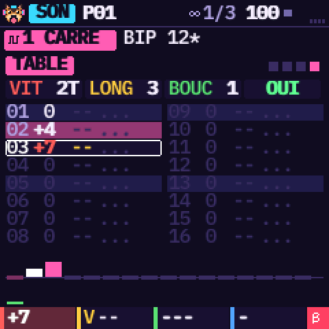
EDIT jusqu'à TABLELa table est la dernière page d'un son. La ligne 0 porte ses réglages : K1 la vitesse (en ticks, 6 = une ligne), K2 la longueur, K3 le pas où elle reboucle après le dernier (ou aucun : le dernier pas reste), K4 marche ou arrêt. PRESETS descend dans les pas. Sur un pas : K1 la hauteur au-dessus de la note (±24 demi-tons ; sur un KIT, l'accord du fût), K2 le volume (
--le laisse tel quel), K3 l'effet, K4 sa valeur. ARP efface le pas. Le pas qui joue s'allume à la couleur de la piste, et les barres du bas dessinent la hauteur de chaque pas.
| Effet | Ce qu'il fait quand son pas arrive |
|---|---|
| FRP | Frappe : rejoue la note (le fût, la tranche, le synthé), à la hauteur de son pas |
| CUT | Arrête la note |
| VIB, BND | Vibrato, glissement de hauteur à partir d'ici (0 : plus rien) |
| FOR, ECR | La forme d'onde ; les bits écrasés |
| VOL, PAN | Le volume glisse à partir d'ici (0 : il s'arrête) ; le panoramique de la note |
| SAU | Saute au pas N après celui-ci |
La table repart à chaque note et continue tant que la note sonne ; elle s'arrête avec le morceau. Une frappe ne joue que tant que la note est tenue : un OFF dans le tracker l'arrête. Trois tables à essayer :
- Un arpège chiptune : vitesse 2, longueur 3, boucle au pas 1 ; pas 0, +4, +7 (ou +3 en mineur).
- Un roulement qui monte : sur un KIT, vitesse 3, longueur 4 : quatre frappes, volumes 6, 9, 12, 15, boucle au pas 4.
- Un kick qui tombe : sur une ONDE ou un CARRE, vitesse 1, pas 0, −2, −4, −6, −8… et pas de boucle.
15Le groove
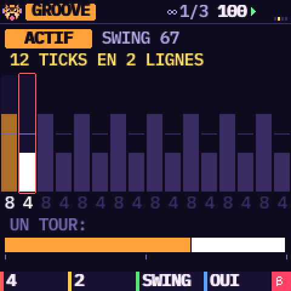
GLO deux foisLe groove règle la durée de chaque ligne, en ticks : 6 ticks font une double croche droite. Ses pas jouent chacun leur tour, un par ligne : 7 puis 5 est un léger swing, 8 puis 4 un swing appuyé, 4 4 4 un ternaire. Quand il est actif, il remplace le swing de la page CHAINE. K1 règle les ticks du pas choisi (ALGORITHM ou une touche blanche le choisit), K2 la longueur, K3 un modèle (il active le groove), K4 marche ou arrêt.
La bande sous les barres montre un tour tel qu'il joue. Quand les ticks font 6 par ligne (7 + 5), la mesure garde sa durée ; sinon le compte passe en rouge, et le motif raccourcit ou s'allonge. L'horloge MIDI de sortie envoie les ticks tels qu'ils jouent : une boîte à rythmes suit le groove.
16Tes propres samples
KAWA a quatre emplacements pour tes sons : MON 1 à MON 4, d'environ 1,7 s chacun à 22 kHz. Ils apparaissent comme SOURCE du moteur SAMPLE, à côté des breaks.
- Dans l'émulateur : glisse un fichier son sur la page, ou choisis-le dans le panneau « Tes samples ». Il est converti tout seul : mono, 22 kHz, normalisé.
- Sur le FM-1 :
python3 install/kawa_samples.py put 1 mon-son.wav, ou le bouton « Envoyer au FM-1 » de l'émulateur. KAWA doit être à l'arrêt pendant l'envoi : le son se coupe un instant pendant l'écriture. Si l'envoi s'interrompt, l'emplacement reste vide, jamais abîmé. - Ensuite, sur la page SON d'une piste SAMPLE, mets SOURCE sur MON 1 à 4 et choisis le MODE : en tranches sur les touches blanches, ou joué sur les notes (C4 = la hauteur d'origine).
Éditer un sample
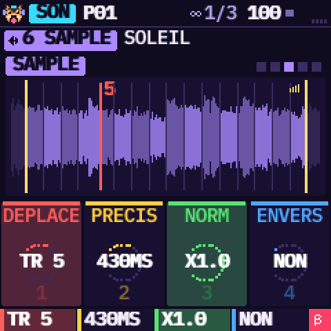
EDIT jusqu'à SAMPLESur une piste SAMPLE, un break ou un de tes sons. Rien n'est réécrit dans le son : l'édition dit seulement comment il joue, et elle est gardée avec le projet, piste par piste. PRESETS choisit le repère : DEBUT, FIN, puis les tranches 2 à 16 (en mode TRANCHE). K1 le déplace, K2 finement (sa place s'affiche en millisecondes), et tu entends la tranche. Déplace une tranche et les autres restent où elles étaient ; ARP les répartit à nouveau à égalité. K3 NORM amène le point le plus fort de la partie éditée au maximum (jusqu'à ×16), K4 la joue à l'envers.
17Raccourcis
| Geste | Effet |
|---|---|
| HOME tenu | L'aide de la page (barre jaune AIDE) |
| HOME + PLAY | Panique : tout s'arrête, voix et effets live coupés (« PANIC ») |
| SAVE tenu | Les outils : OPTIONS, ANNULER, REFAIRE, EFFACER, COPIER, COLLER, HASARD (SELECT choisit, ça se lance au relâchement ; K3 : la piste ou le motif) |
| SAVE tenu + OCT− / OCT+ | Annuler / refaire aussitôt (motifs et sons, 10 étapes) |
| PRESETS (SON, son retouché) puis OCT+ / OCT− | Charger le son d'usine montré en doré / garder ton son |
| SAVE puis OCT+ | Resauver le morceau à sa place |
| FX, puis FX, puis FX | ENVOIS, puis LIVE, puis retour d'où tu viens (SELECT va aussi d'ENVOIS à LIVE) |
| FX tenu + touches blanches | Effets live, tant que tu tiens (barre jaune LIVE ; une touche avec FX joue aussitôt) |
| SCL deux fois | La MAGIE (une fois : la GAMME ; trois fois : les pistes) |
| LFO, puis LFO | LFO, puis MODULATION |
| GLO deux fois, trois fois | Le GROOVE, puis les OPTIONS |
| ENV deux fois | MIX et l'effet master |
| SEQ puis OCT− / OCT+ | Le motif à 16, 32 ou 64 pas |
| REC tenu + SELECT | Le saut de lignes après une note |
| ARP (PISTES) | Efface la case |
| ARP tenu + K3 K4 (PISTES) | Le second effet de la case |
| ARP tenu + SELECT | Insérer / ôter une ligne de la piste |
| ARP tenu + ALGORITHM | Insérer / ôter une ligne du motif entier |
| ARP tenu + PRESETS (SON) | Le moteur suivant / précédent de la piste |
| ARP tenu + touche noire (MIX) | Solo de la piste |
| Un pas tenu + ARP (GRILLE) | Efface le pas |
Dans l'émulateur : Ctrl+Z annuler, Ctrl+Y refaire, Ctrl+S sauver, Espace PLAY, Entrée REC, Maj tenu FX, Retour ARP, Échap HOME, les flèches pour la ligne et la piste.
18Options
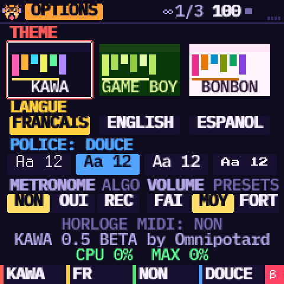
Thème, langue, horloge, police, métronomeGLO trois fois (ou SAVE tenu, puis l'outil OPTIONS ; SELECT parcourt aussi CHAINE, GROOVE et OPTIONS). K1 choisit le thème (KAWA, GAME BOY, BONBON), K2 la langue de l'écran (anglais, français, espagnol), K4 la police de l'écran : DOUCE (celle par défaut), BASE (celle des débuts), CLAIRE (faite pour la lecture) ou 8-BIT (arcade) ; chacune est montrée écrite avec elle-même. K3 règle l'horloge MIDI par USB :
- SORTIE : KAWA envoie start, stop et le tempo (les ticks du groove aussi), pour synchroniser une boîte à rythmes ou un logiciel.
- ENTREE : KAWA suit une autre machine. Son START lance le morceau là où PLAY le ferait, son STOP l'arrête, son tempo mène (il s'affiche en vert, mesuré sur quatre temps) ; chaque ligne attend ses ticks ou les rattrape, et part quelques millisecondes après son tick. En ENTREE sans horloge, PLAY l'attend, et le dit.
Le METRONOME a deux réglages. ALGORITHM choisit son mode : NON, OUI, ou REC (il ne clique que lorsque REC est allumé et que le morceau joue). PRESETS règle son VOLUME : FAI, MOY ou FORT (tu entends un clic quand tu le changes). Le clic part à chaque temps (toutes les quatre lignes) tant que le morceau joue, plus aigu sur le premier temps de la mesure ; il passe après les effets du master, qui ne le touchent pas. Il part aussi dans l'audio USB : coupe-le quand tu enregistres le FM-1 sur un ordinateur. Par défaut : métronome NON, volume MOY.
Les réglages sont gardés à l'extinction (ceux de la 0.2 et de la 0.4 se rechargent).
La ligne CPU dit combien du temps de calcul le son utilise. Au-delà de 70 %, KAWA allège tout seul le son, réverb d'abord, plutôt que de craquer.
19Aide et dépannage
- Je ne sais plus ce que fait un potard : regarde la ligne du bas, ou tiens HOME.
- Pas de son : monte MASTER ; sur MIX, vérifie qu'aucune piste n'est coupée (un M rouge) ; vérifie le volume de la note avec K2.
- « FM: UNE SEULE PISTE » : une autre piste a déjà la FM ; change d'abord son moteur.
- Une modification ratée, un son perdu : tiens SAVE et appuie sur OCT− (OCT+ refait). Ça marche aussi sur les sons, jusqu'à 10 étapes en arrière.
- PRESETS ne change pas le son : un son que tu as retouché (une étoile après son nom) est protégé. PRESETS montre le son d'usine en doré, avec « OCT+ » à côté : OCT+ le charge, OCT− garde le tien.
- Un son reste bloqué, tout s'emballe : HOME + PLAY, la panique (« PANIC »).
- Le chien ne part pas : c'est voulu, il attend que tu touches un bouton, une touche ou un potard.
- SAVE clignote : le morceau a des modifications qui ne sont pas sauvées dans un de tes emplacements (la sauvegarde AUTO ne compte pas).
- Un morceau vide au démarrage : c'est normal, la démo est dans SAVE, PROJETS, DEMO.
- Je ne retrouve plus un geste de la 0.4 : regarde « Nouveautés de la 0.5 » en haut de cette page (la MAGIE est sur SCL, LFO et MODULATION sur LFO, le moteur se change avec ARP + PRESETS).
- KAWA ne démarre plus : tiens OCT− en allumant (le secours USB), puis réinstalle KAWA ou le firmware officiel.
20Soutenir KAWA
KAWA est gratuit et libre. Si tu aimes ce que je fais, pense à me soutenir ! Chaque petit geste compte énormément. Paye-moi une bière, et je continue à faire sonner le FM-1.
Payer une bière